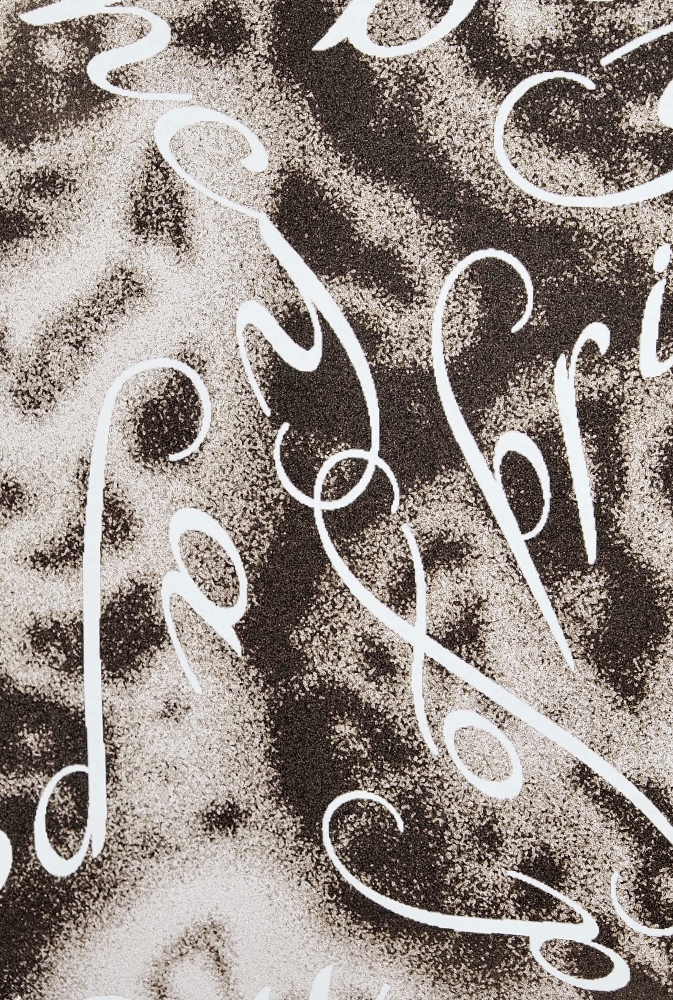

← Back


SEASHELL
Posters that revolve around an identical subject of seashells. Rendered photographs and typographic elements were employed to visualize the texture, qualities, forms, and emotions evoked from a seashell.